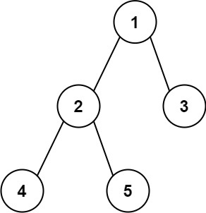

前中后序的区别
前序位置的代码在刚刚进入一个二叉树节点的时候执行；
后序位置的代码在将要离开一个二叉树节点的时候执行；
中序位置的代码在一个二叉树节点左子树都遍历完，即将开始遍历右子树的时候执行。
前序和后序的区别
- 一个节点在第几层，你从根节点遍历过来的过程就能顺带记录，用递归函数的参数就能传递下去
- 而以一个节点为根的整棵子树有多少个节点，你必须遍历完子树之后才能数清楚，然后通过递归函数的返回值拿到答案
- 一旦你发现题目和子树有关，那大概率要给函数设置合理的定义和返回值，在后序位置写代码了
- maxDepth 的后序位置是知道左右子树的最大深度的
543. 二叉树的直径
给你一棵二叉树的根节点，返回该树的 直径 。
二叉树的 直径 是指树中任意两个节点之间最长路径的 长度 。这条路径可能经过也可能不经过根节点 root 。
两节点之间路径的 长度 由它们之间边数表示。

解答
- 两个节点的直径就是求两个节点的公共祖先左右节点的最大深度之和
func diameterOfBinaryTree(root *TreeNode) int {
maxDiameter := 0
var maxDepth func(node *TreeNode) int
maxDepth = func(node *TreeNode) int {
if node == nil {
return 0
}
left := maxDepth(node.Left)
right := maxDepth(node.Right)
maxDiameter = max(maxDiameter, left+right)
return 1 + max(left, right)
}
maxDepth(root)
return maxDiameter
}
114. 二叉树展开为链表
给你二叉树的根结点 root ，请你将它展开为一个单链表：
展开后的单链表应该同样使用 TreeNode ，其中 right 子指针指向链表中下一个结点，而左子指针始终为 null 。
展开后的单链表应该与二叉树 先序遍历 顺序相同。
示例 1：
输入：root = [1,2,5,3,4,null,6]
输出：[1,null,2,null,3,null,4,null,5,null,6]
示例 2：
输入：root = []
输出：[]
示例 3：
输入：root = [0]
输出：[0]
解答
- 通过分解
- 对于一个节点 x，可以执行以下流程：
1、先利用 flatten(x.left) 和 flatten(x.right) 将 x 的左右子树拉平。
2、将 x 的右子树接到左子树下方，然后将整个左子树作为右子树

func flatten(root *TreeNode) {
if root == nil {
return
}
flatten(root.Left)
flatten(root.Right)
left := root.Left
right := root.Right
root.Right = left
root.Left = nil
p := root
for p.Right != nil {
p = p.Right
}
p.Right = right
}
652. 寻找重复的子树
给你一棵二叉树的根节点 root ，返回所有 重复的子树 。
对于同一类的重复子树，你只需要返回其中任意 一棵 的根结点即可。
如果两棵树具有 相同的结构 和 相同的结点值 ，则认为二者是 重复 的。
输入：root = [1,2,3,4,null,2,4,null,null,4]
输出：[[2,4],[4]]
解答
func findDuplicateSubtrees(root *TreeNode) []*TreeNode {
ans := []*TreeNode{}
treeArray := map[string]int{}
var travel func(node *TreeNode) string
travel = func(node *TreeNode) string {
if node == nil {
return "#"
}
left := travel(node.Left)
right := travel(node.Right)
res := left + "," + right + "," + strconv.Itoa(node.Val)
if treeArray[res] == 1 {
ans = append(ans, node)
}
treeArray[res]++
return res
}
travel(root)
return ans
}
序列化
- 什么样的序列化的数据可以反序列化出唯一的一棵二叉树
- 前序和后序
- 因为前序/后序遍历的结果中，可以确定根节点的位置，而中序遍历的结果中，根节点的位置是无法确定的
- 中序无法还原
297. 二叉树的序列化与反序列化
序列化是将一个数据结构或者对象转换为连续的比特位的操作，进而可以将转换后的数据存储在一个文件或者内存中，同时也可以通过网络传输到另一个计算机环境，采取相反方式重构得到原数据。
请设计一个算法来实现二叉树的序列化与反序列化。这里不限定你的序列 / 反序列化算法执行逻辑，你只需要保证一个二叉树可以被序列化为一个字符串并且将这个字符串反序列化为原始的树结构。
提示: 输入输出格式与 LeetCode 目前使用的方式一致，详情请参阅 LeetCode 序列化二叉树的格式。你并非必须采取这种方式，你也可以采用其他的方法解决这个问题。
输入：root = [1,2,3,null,null,4,5]
输出：[1,2,3,null,null,4,5]
type Codec struct {
}
func Constructor() Codec {
return Codec{}
}
// Serializes a tree to a single string.
func (c *Codec) serialize(root *TreeNode) string {
if root == nil {
return ""
}
queue := list.New()
queue.PushBack(root)
ans := ""
for queue.Len() > 0 {
n := queue.Len()
for i := 0; i < n; i++ {
node := queue.Remove(queue.Front()).(*TreeNode)
if node == nil {
ans += "null,"
continue
}
ans += strconv.Itoa(node.Val) + ","
queue.PushBack(node.Left)
queue.PushBack(node.Right)
}
}
return ans
}
// Deserializes your encoded data to tree.
func (c *Codec) deserialize(data string) *TreeNode {
if len(data) == 0 {
return nil
}
nodes := strings.Split(data, ",")
val, _ := strconv.Atoi(nodes[0])
root := &TreeNode{Val: val}
queue := list.New()
queue.PushBack(root)
nodes = nodes[1:]
for queue.Len() > 0 {
n := queue.Len()
for i := 0; i < n; i++ {
node := queue.Remove(queue.Front()).(*TreeNode)
if nodes[0] != "null" {
val, _ := strconv.Atoi(nodes[0])
node.Left = &TreeNode{Val: val}
queue.PushBack(node.Left)
}
nodes = nodes[1:]
if nodes[0] != "null" {
val, _ := strconv.Atoi(nodes[0])
node.Right = &TreeNode{Val: val}
queue.PushBack(node.Right)
}
nodes = nodes[1:]
}
}
return root
}
331. 验证二叉树的前序序列化
序列化二叉树的一种方法是使用 前序遍历 。当我们遇到一个非空节点时，我们可以记录下这个节点的值。如果它是一个空节点，我们可以使用一个标记值记录，例如 #。
例如，上面的二叉树可以被序列化为字符串 "9,3,4,#,#,1,#,#,2,#,6,#,#"，其中 # 代表一个空节点。
给定一串以逗号分隔的序列，验证它是否是正确的二叉树的前序序列化。编写一个在不重构树的条件下的可行算法。
保证 每个以逗号分隔的字符或为一个整数或为一个表示 null 指针的 '#' 。
你可以认为输入格式总是有效的
例如它永远不会包含两个连续的逗号，比如 "1,,3" 。
注意：不允许重建树。
示例 1:
输入: preorder = "9,3,4,#,#,1,#,#,2,#,6,#,#"
输出: true
解答
func isValidSerialization(preorder string) bool {
stack := []string{}
nodes := strings.Split(preorder, ",")
for _, node := range nodes {
stack = append(stack, node)
for len(stack) >= 3 && stack[len(stack)-1] == "#" &&
stack[len(stack)-2] == "#" && stack[len(stack)-3] != "#" {
stack = stack[:len(stack)-3]
stack = append(stack, "#")
}
}
return len(stack) == 1 && stack[0] == "#"
}
449. 序列化和反序列化二叉搜索树
序列化是将数据结构或对象转换为一系列位的过程，以便它可以存储在文件或内存缓冲区中，或通过网络连接链路传输，以便稍后在同一个或另一个计算机环境中重建。
设计一个算法来序列化和反序列化 二叉搜索树 。 对序列化/反序列化算法的工作方式没有限制。 您只需确保二叉搜索树可以序列化为字符串，并且可以将该字符串反序列化为最初的二叉搜索树。
编码的字符串应尽可能紧凑。
示例 1：
输入：root = [2,1,3]
输出：[2,1,3]
示例 2：
输入：root = []
输出：[]
type Codec struct {
}
func Constructor() Codec {
return Codec{}
}
// Serializes a tree to a single string.
func (this *Codec) serialize(root *TreeNode) string {
ans := ""
var travel func(node *TreeNode)
travel = func(node *TreeNode) {
if node == nil {
return
}
ans += strconv.Itoa(node.Val) + ","
travel(node.Left)
travel(node.Right)
}
if root == nil {
return ans
}
travel(root)
return ans[:len(ans)-1]
}
// Deserializes your encoded data to tree.
func (this *Codec) deserialize(data string) *TreeNode {
if len(data) == 0 {
return nil
}
nodes := strings.Split(data, ",")
var travel func(nodes []string) *TreeNode
travel = func(nodes []string) *TreeNode {
if len(nodes) == 0 {
return nil
}
nodeVal := nodes[0]
nodes = nodes[1:]
val, _ := strconv.Atoi(nodeVal)
root := &TreeNode{Val: val}
pos := 0
for ; pos < len(nodes); pos++ {
val1, _ := strconv.Atoi(nodes[pos])
if val1 > val {
break
}
}
root.Left = travel(nodes[:pos])
root.Right = travel(nodes[pos:])
return root
}
return travel(nodes)
}
230. 二叉搜索树中第K小的元素
给定一个二叉搜索树的根节点 root ，和一个整数 k ，请你设计一个算法查找其中第 k 小的元素（从 1 开始计数）。
输入：root = [3,1,4,null,2], k = 1
输出：1
输入：root = [5,3,6,2,4,null,null,1], k = 3
输出：3
解答
func kthSmallest(root *TreeNode, k int) int {
num := 0
ans := 0
var travel func(node *TreeNode)
travel = func(node *TreeNode) {
if node == nil {
return
}
travel(node.Left)
num++
if num == k {
ans = node.Val
}
travel(node.Right)
}
travel(root)
return ans
}
96. 不同的二叉搜索树
给你一个整数 n ，求恰由 n 个节点组成且节点值从 1 到 n 互不相同的 二叉搜索树 有多少种？返回满足题意的二叉搜索树的种数。
输入：n = 3
输出：5
输入：n = 1
输出：1
解答
- lo,hi区间内，切分的二叉树
- {lo,i-1}区间是左子树
- {i+1,hi}区间是右子树
func numTrees(n int) int {
memo := make([][]int, n+1)
for i, _ := range memo {
memo[i] = make([]int, n+1)
}
var travel func(lo, hi int) int
travel = func(lo, hi int) int {
if lo > hi {
return 1
}
if memo[lo][hi] != 0 {
return memo[lo][hi]
}
ans := 0
for i := lo; i <= hi; i++ {
left := travel(lo, i-1)
right := travel(i+1, hi)
ans += left * right
}
memo[lo][hi] = ans
return ans
}
return travel(1, n)
}
1373. 二叉搜索子树的最大键值和
给你一棵以 root 为根的 二叉树 ，请你返回 任意 二叉搜索子树的最大键值和。
二叉搜索树的定义如下：
任意节点的左子树中的键值都 小于 此节点的键值。
任意节点的右子树中的键值都 大于 此节点的键值。
任意节点的左子树和右子树都是二叉搜索树。
输入：root = [1,4,3,2,4,2,5,null,null,null,null,null,null,4,6]
输出：20
解释：键值为 3 的子树是和最大的二叉搜索树。
解答
- 1、左右子树是否是 BST。
- 2、左子树的最大值和右子树的最小值。
- 3、左右子树的节点值之和。
func maxSumBST(root *TreeNode) int {
maxSum := 0
var travel func(node *TreeNode) []int
//res[4] 1 是否搜索二叉树 2 最小指 3 最大值 4 所有节点之和
travel = func(node *TreeNode) []int {
if node == nil {
return []int{1, math.MaxInt64, math.MinInt64, 0}
}
left := travel(node.Left)
right := travel(node.Right)
res := make([]int, 4)
//1 左右子树都是搜索二叉树 2 当前节点大于左子树最大值 3 当前节点小于右子树最小值
if left[0] == 1 && right[0] == 1 && node.Val > left[2] &&
node.Val < right[1] {
res[0] = 1
res[1] = min(left[1], node.Val)
res[2] = max(right[2], node.Val)
res[3] = left[3] + right[3] + node.Val
maxSum = max(maxSum, res[3])
} else {
//非二叉搜索树
res[0] = 0
}
return res
}
travel(root)
return maxSum
}
236. 二叉树的最近公共祖先
给定一个二叉树, 找到该树中两个指定节点的最近公共祖先。
百度百科中最近公共祖先的定义为：“对于有根树 T 的两个节点 p、q，最近公共祖先表示为一个节点 x，满足 x 是 p、q 的祖先且 x 的深度尽可能大（一个节点也可以是它自己的祖先）。”
输入：root = [3,5,1,6,2,0,8,null,null,7,4], p = 5, q = 1
输出：3
解释：节点 5 和节点 1 的最近公共祖先是节点 3 。
解答
- 后序遍历
- left != nil && right != nil 情况一
- left == nil || right == nil
func lowestCommonAncestor(root, p, q *TreeNode) *TreeNode {
if root == nil {
return nil
}
var travel func(node, p, q *TreeNode) *TreeNode
travel = func(node, p, q *TreeNode) *TreeNode {
if node == nil {
return nil
}
if node.Val == p.Val || node.Val == q.Val {
return node
}
left := travel(node.Left)
right := travel(node.Right)
if left != nil && right != nil {
return node
}
if left != nil {
return left
}
return right
}
return travel(root, p, q)
}
1650. 二叉树的最近公共祖先 III
给定一棵二叉树中的两个节点 p 和 q，返回它们的最近公共祖先节点（LCA）。
每个节点都包含其父节点的引用（指针）。Node 的定义如下：
class Node {
public int val;
public Node left;
public Node right;
public Node parent;
}
根据维基百科中对最近公共祖先节点的定义：“两个节点 p 和 q 在二叉树 T 中的最近公共祖先节点是后代节点中既包括 p 又包括 q 的最深节点（我们允许一个节点为自身的一个后代节点）”。一个节点 x 的后代节点是节点 x 到某一叶节点间的路径中的节点 y。
输入: root = [3,5,1,6,2,0,8,null,null,7,4], p = 5, q = 1
输出: 3
解释: 节点 5 和 1 的最近公共祖先是 3。
解答
- 而是单链表相交的问题，你把 parent 指针想象成单链表的 next 指针，题目就变成了：
func lowestCommonAncestor(p *Node, q *Node) *Node {
a, b := p, q
for a != b {
if a == nil {
a = q
} else {
a = a.Parent
}
if b == nil {
b = p
} else {
b = b.Parent
}
}
return a
}
366. 寻找二叉树的叶子节点
给你一棵二叉树的 root 节点，请按照以下方式收集树的节点：
收集所有的叶子节点。
移除所有的叶子节点。
重复以上步骤，直到树为空。
输入：root = [1,2,3,4,5]
输出：[[4,5,3],[2],[1]]
解释：
[[3,5,4],[2],[1]] 和 [[3,4,5],[2],[1]] 也被视作正确答案，因为每一层返回元素的顺序不影响结果。
解答
func findLeaves(root *TreeNode) [][]int {
ans := [][]int{}
var travel func(node *TreeNode) int
travel = func(node *TreeNode) int {
if node == nil {
return 0
}
left := travel(node.Left)
right := travel(node.Right)
deepth := max(left, right) + 1
//相同深度的节点
if deepth > len(ans) {
ans = append(ans, []int{})
}
ans[deepth-1] = append(ans[deepth-1], node.Val)
return deepth
}
travel(root)
return ans
}
865. 具有所有最深节点的最小子树
给定一个根为 root 的二叉树，每个节点的深度是 该节点到根的最短距离 。
返回包含原始树中所有 最深节点 的 最小子树 。
如果一个节点在 整个树 的任意节点之间具有最大的深度，则该节点是 最深的 。
一个节点的 子树 是该节点加上它的所有后代的集合。

输入：root = [3,5,1,6,2,0,8,null,null,7,4]
输出：[2,7,4]
解释：
我们返回值为 2 的节点，在图中用黄色标记。
在图中用蓝色标记的是树的最深的节点。
注意，节点 5、3 和 2 包含树中最深的节点，但节点 2 的子树最小，因此我们返回它。
解答
func subtreeWithAllDeepest(root *TreeNode) *TreeNode {
maxDepth := -1
var ans *TreeNode
var travel func(node *TreeNode, depth int) int
travel = func(node *TreeNode, depth int) int {
if node == nil {
maxDepth = max(depth, maxDepth)
return depth
}
left := travel(node.Left, depth+1)
right := travel(node.Right, depth+1)
if left == right && left == maxDepth {
ans = node
}
return max(left, right)
}
travel(root, 0)
return ans
}
1740. 找到二叉树中的距离
给定一棵二叉树的根节点 root 以及两个整数 p 和 q ，返回该二叉树中值为 p 的结点与值为 q 的结点间的 距离 。
两个结点间的 距离 就是从一个结点到另一个结点的路径上边的数目。
输入：root = [3,5,1,6,2,0,8,null,null,7,4], p = 5, q = 0
输出：3
解释：在 5 和 0 之间有 3 条边：5-3-1-0
func findLca(root *TreeNode, p, q int) *TreeNode {
if root == nil {
return nil
}
if root.Val == p || root.Val == q {
return root
}
left := findLca(root.Left, p, q)
right := findLca(root.Right, p, q)
if left != nil && right != nil {
return root
}
if left != nil {
return left
}
return right
}
func findDepth(root *TreeNode, val int) int {
if root == nil {
return -1
}
if root.Val == val {
return 0
}
left := findDepth(root.Left, val)
right := findDepth(root.Right, val)
maxDepth := max(left, right)
if maxDepth >= 0 {
return maxDepth + 1
}
return -1
}
func findDistance(root *TreeNode, p int, q int) int {
lca := findLca(root, p, q)
return findDepth(lca, p) + findDepth(lca, q)
}